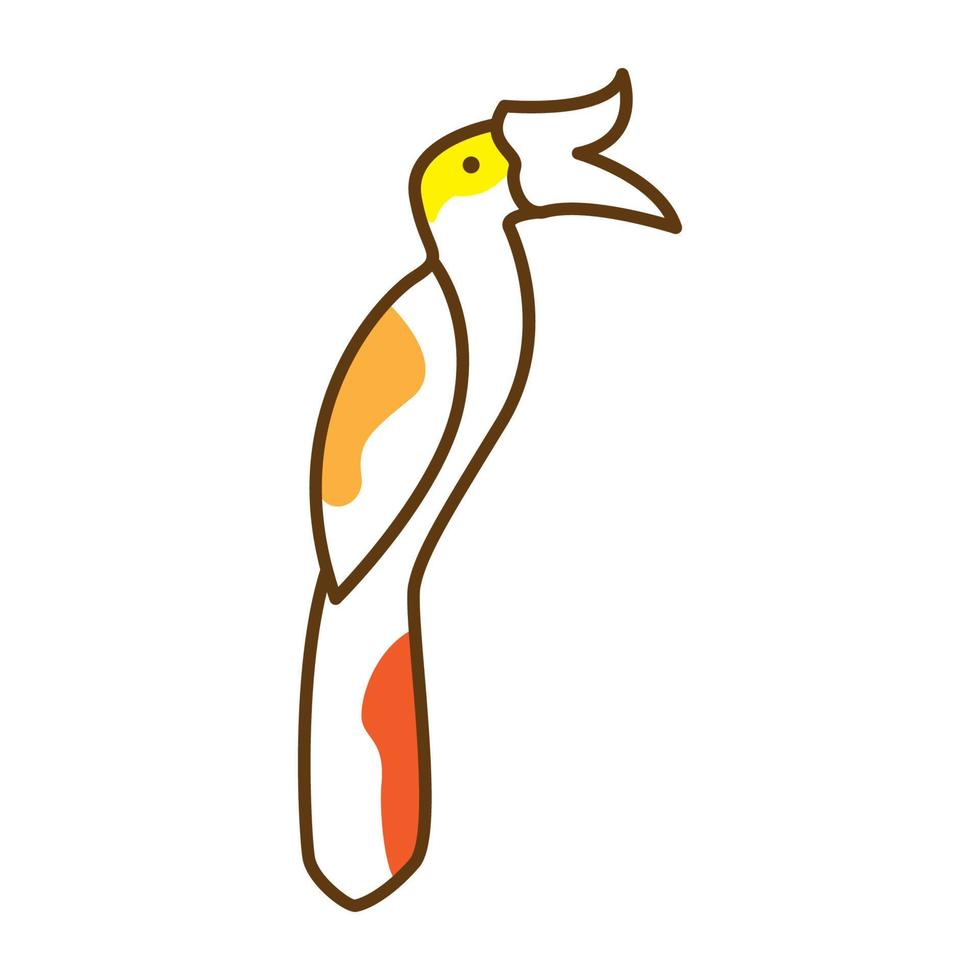

Who We Are
Sarawak AgroConnect is a web project developed by students from the Bachelor of Computer Science (Software Engineering) program at UTS Sarawak.
Guided by Dr. Alan Ting Huong Young and inspired by the Sarawak Digital Economy Blueprint 2030, this project aims to help local farmers promote and sell their products online, supporting the digital growth of Sarawak’s agriculture sector.
Our platform is designed for farmers, entrepreneurs, and buyers who value accessibility and trust in agricultural trade.
Team Members:
- Adrian Singa Yusak (BCS24090038) — Front-End Developer
- Reevandra Ramzes Tamping Anak Jori (BCS24020041) — Project Leader & Mid-End Developer
- Vidigol Figo Sultan (BCS24020011) — Back-End Developer
Built using Object-Oriented Programming (OOP) principles, this project demonstrates practical applications of Inheritance, Polymorphism, Object Management, and Exception Handling.